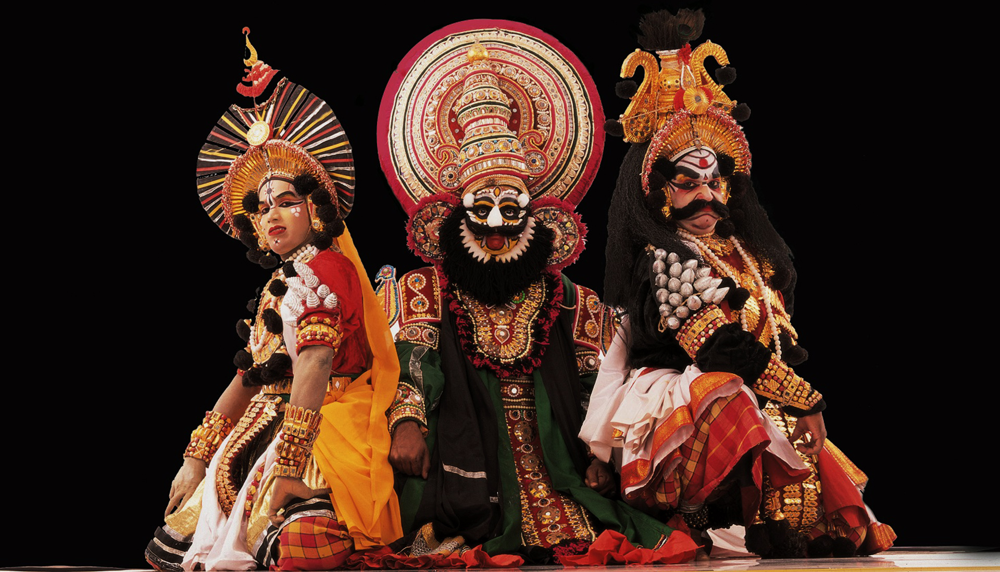

Transform traditional Yakshagana padya into vivid narrative stories through advanced audio recognition.
Padya Samples
Story Narratives

Yakshagana Katha Vaani bridges centuries of oral storytelling tradition with modern audio recognition technology. Our custom-built dataset and machine learning model preserve the authentic connection between padya verses and their narrative stories, ensuring this cultural heritage remains accessible for generations to come.
Our custom-trained model recognizes Yakshagana padya from audio and retrieves the corresponding narrative story.
Upload or record Yakshagana audio with high precision.
Compare extracted text with trained dataset.
Receive full narrative story preserving tradition.